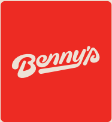
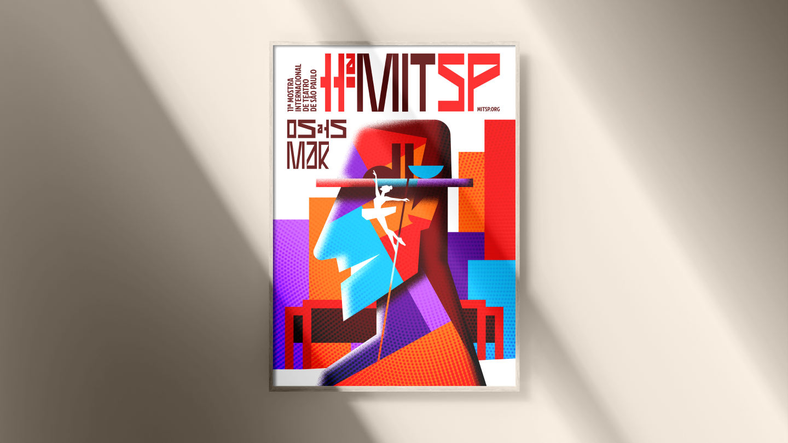

branding made in brazil
fernando prudencio
estratégia & novos negócios
Fernando Prudencio, tua na interseção entre estratégia, comunicação e design, conectando visão de negócio à construção real de marcas.
luan pessoa
diretor de arte
Atuando desde 2016 como designer especialista em marcas e identidade visual, Luan soma mais de 100 marcas criadas ao longo de sua trajetória. Com domínio avançado de Photoshop e Illustrator, desenvolveu projetos para grandes nomes como Embracon, Certisign e Electrolux, focando sempre na construção de identidades estratégicas e de alto impacto para o mercado.
wesley gulitts
diretor de arte & ilustrador
Publicitário, ilustrador, muralista e diretor de arte desde 2011. Comecei desenhando e pintando na infância, uma paixão herdada do meu pai que moldou quem sou hoje. Ao longo dos anos, me consolidei como um profissional multifacetado, atendendo clientes locais e agências de propaganda de vários estados e países.
all
branding
corporative
sport
fintech


